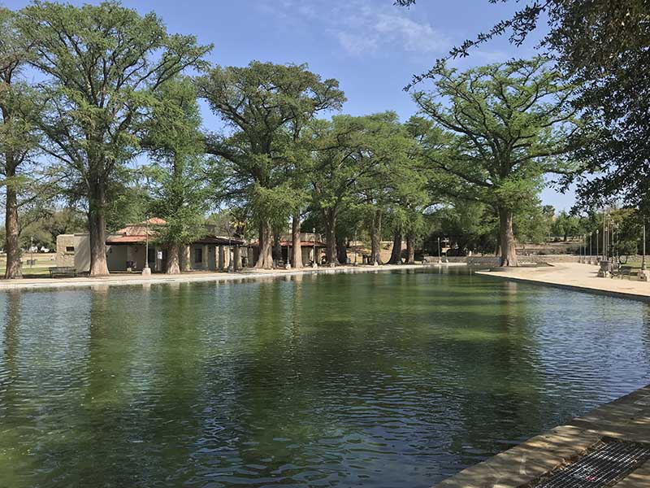

San Pedro Springs Pool
Built in 1922, this swimming pool is fed by fresh spring watter from nearby the park and is open during the summer for vistors!
San Antonio is a great city that is rich in history and culture. However, have you ever wondered where it all began?
Here are some highlights from San Pedro Springs Park! The birthplace of San Antonio!∀
Built in 1922, this swimming pool is fed by fresh spring watter from nearby the park and is open during the summer for vistors!
The San Pedro Library was built in 1930 and was the first library built in San Antonio and a public park, which just so happens to be the the oldest public park in Texas!
These Acequia's, or water canals, were built to transport water long before San Antonio became a city! Their construction is what led many to come to San Antonio for water. Eventually, as the city grew, streets were built over the acequias, and it's why many streets are shaped the way they are today!
Park Information